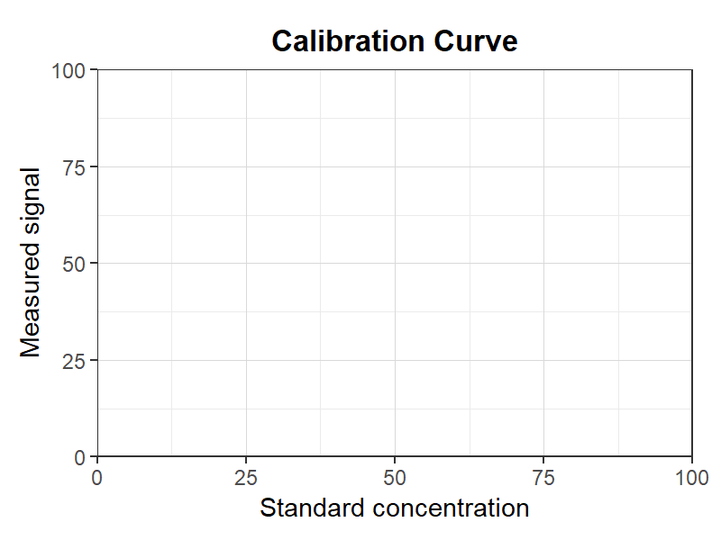
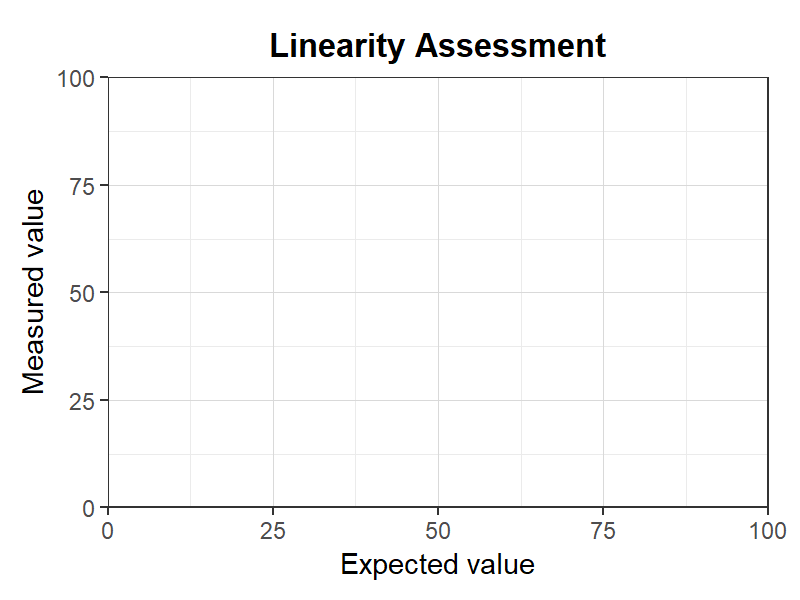
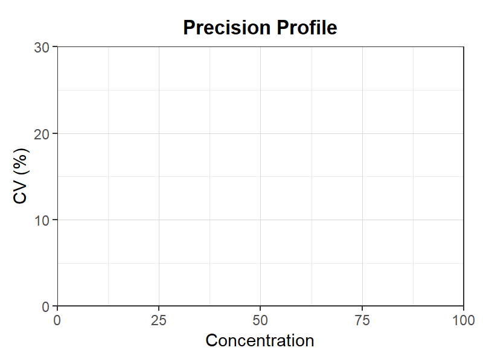
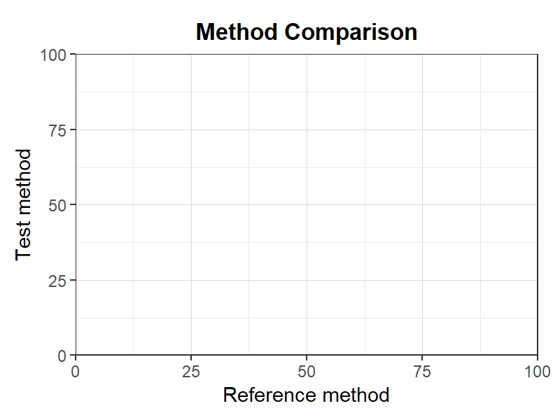
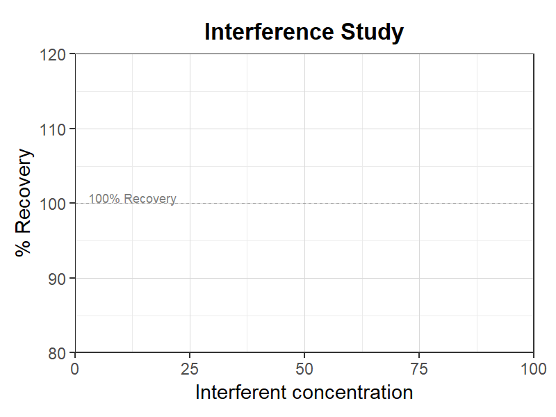
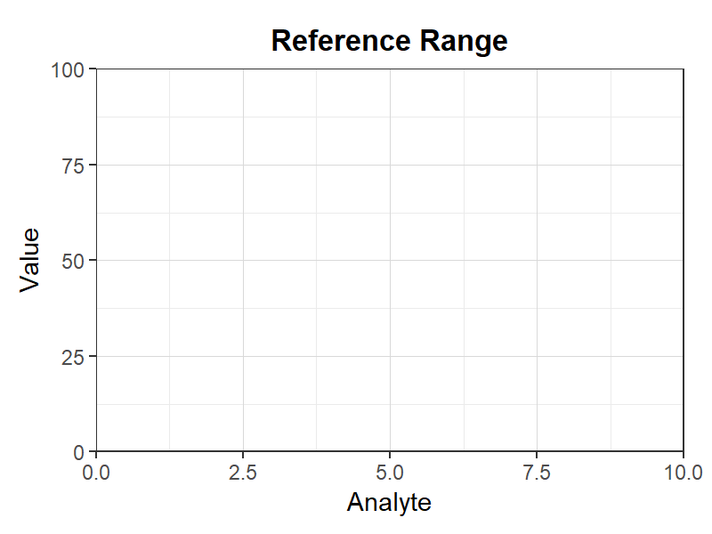
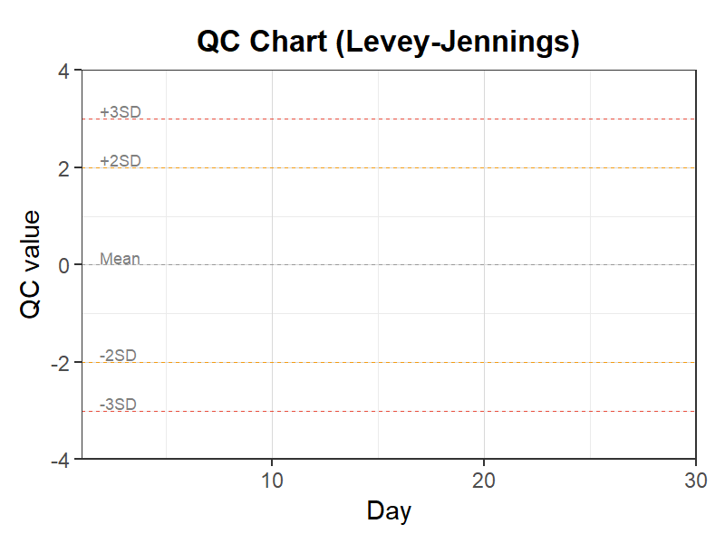
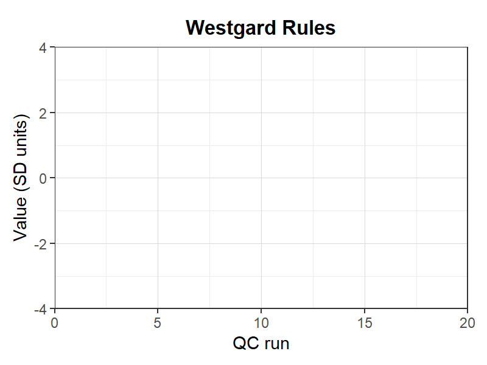
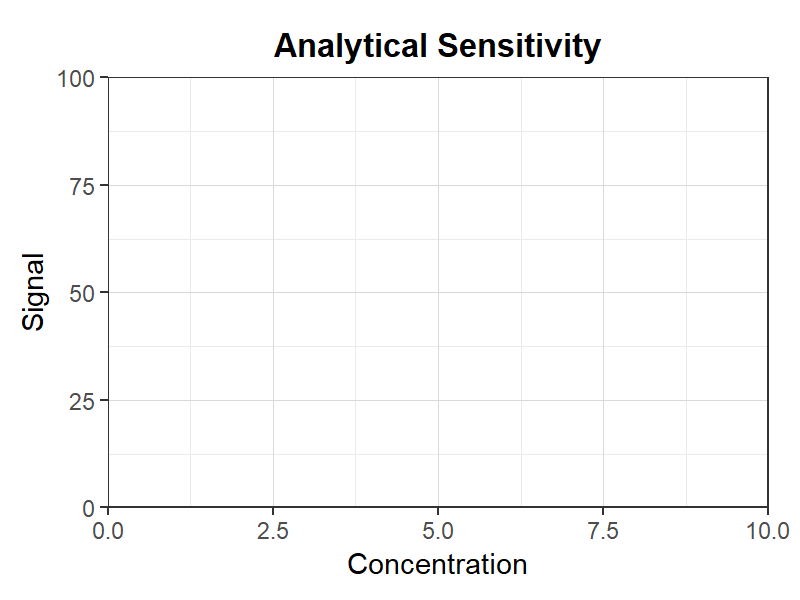
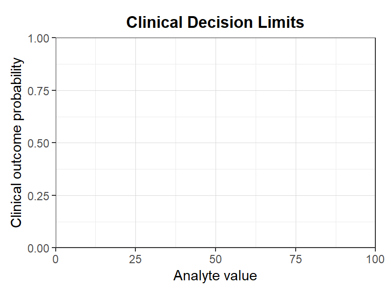

臨床検査 (Clinical Chemistry)
10 templates available

検量線
汎用検量線テンプレート。標準液濃度と測定値の直線関係をプロット。

直線性評価
直線性評価テンプレート。測定法の直線範囲の確認に使用。

精密度プロファイル
精密度プロファイルテンプレート。濃度別の変動係数をプロット。

方法比較
方法比較テンプレート。参照法と新法の相関をプロット。

干渉試験
干渉試験テンプレート。共存物質の影響を評価。

基準範囲
基準範囲テンプレート。各検査項目の正常値範囲をプロット。

QC管理図
レビー・ジェニングスQC管理図テンプレート。日常の精度管理に使用。

ウエストガードルール
ウエストガードルールテンプレート。QCデータの異常判定に使用。

分析感度
分析感度テンプレート。LOD/LOQの決定に使用。

臨床判断値
臨床判断値テンプレート。カットオフ値の設定に使用。